Comment surveiller les prix de produits ?
A l'approche du Black Friday, du Cyber Monday, de noël, ou même toute l'année, vous êtes tujours à la recherche de la bonne affaire.
Vous passez du temps pour sélectionner le produit désiré, mais une fois celui-ci choisi, vous souhaitez l'acheter dans le magasin offrant le meilleur prix. Il vous faut alors vérifier toutes les boutiques une par une, comparer, y noter les prix... De plus, un magasin peut faire une promotion, ce qui peut changer la donne !
Sans parler bu Black Friday et Cyber Monday, où les prix changent en permanence!
Pourquoi ne pas laisser le Prices Checker faire ce travail fastidieux à votre place ?
L'utilisation du Prices Checker suit la même logique:
- D'abord sélectionner le même produit dans chaque magasin,
- ensuite, le Prices Checker l'enregistrera dans sa base et pourra récupérer la mise à jour du prix directement sur le site marchand.
- Un seul click suffira à mettre à jour tous les prix !
Comment surveiller les prix ?
- Démarrez l'application en cliquant sur ce lien: Prices Checker
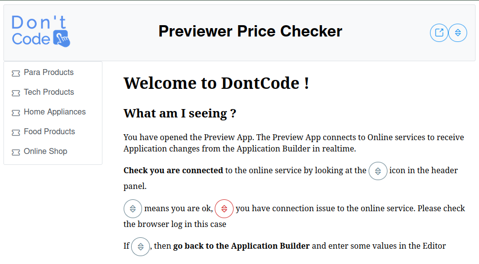
- Il vous présente une catégorie de produits, cliquez sur celle qui vous intéresse. 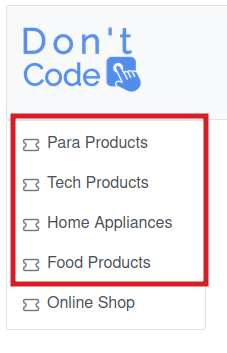
- Vous y voyez les produits déjà surveillés, avec sur chaque colonne son prix dans chaque magasin. Pratique pour comparer en un seul coup d'oeil !
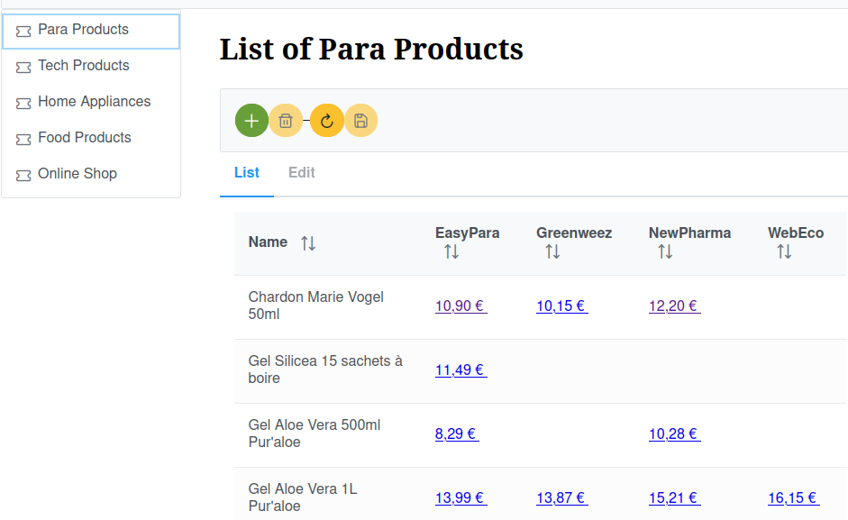
- un click sur l'icone refresh ira rechercher directement tous les prix dans tous les magasins et mettra à jour l'affichage.
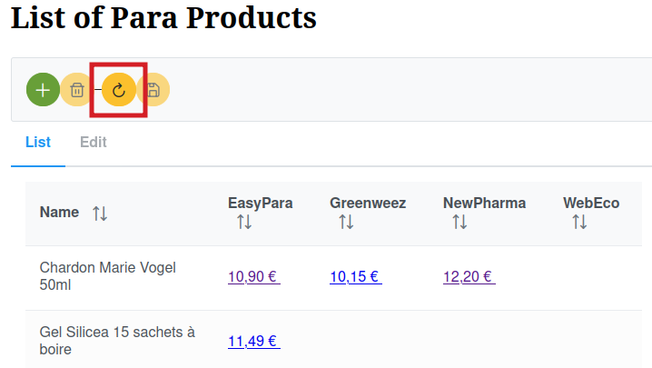
Comment surveiller un nouveau produit ?
- Une fois sur la bonne catégorie de produit, ajoutez un nouveau produit en cliquant sur le bouton +

- L'application vous affiche la page du produit avec une section pour chaque magasin.
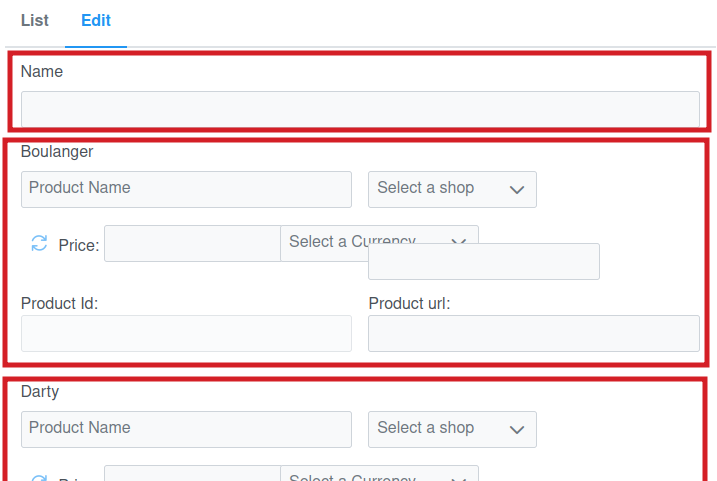
- Tout d'abord entrez un nom pour votre produit, qui sera affiché dans la liste. Il devra donc être facilement reconnaissable.
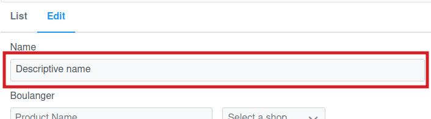
- Pour chaque section, entrez les critères de recherche du produit (ils sont malheureusement souvent differents) et sélectionnez le bon magasin dans la liste. Le magasin sélectionné doit correspondre au nom de la section (ce sera fait automatiquement dans une version prochaine).
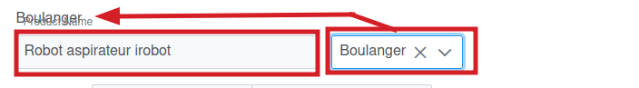
- Une fois ceci fait, l'icone Recherche doit apparaitre, cliquez dessus.
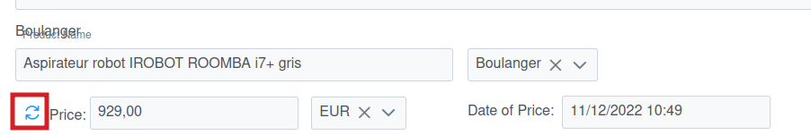
- L'application va alors interroger le magasin et vous afficher la liste de produit trouvée.
- Parcourez cette liste jusqu'à trouver votre produit, sélectionnez le en cliquant sur 'Select'.
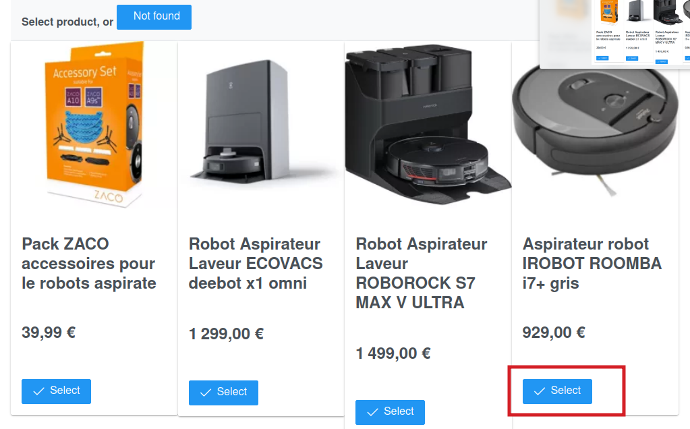
- Si le produit n'apparait pas, cliquez sur 'Not Found' ou changez les critères de recherche.
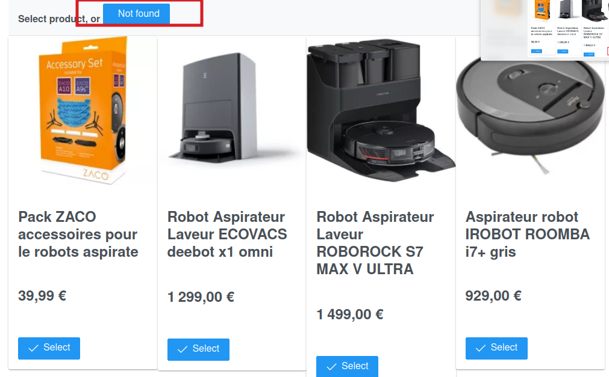
- Une fois trouvé et sélectionné, le produit est maintenant connu de l'application, et vous pouvez aller à la section suivante pour configurer les autres magasins
- Une fois tous les magasins fait, sauvegardez le produit en cliquant sur "Save".
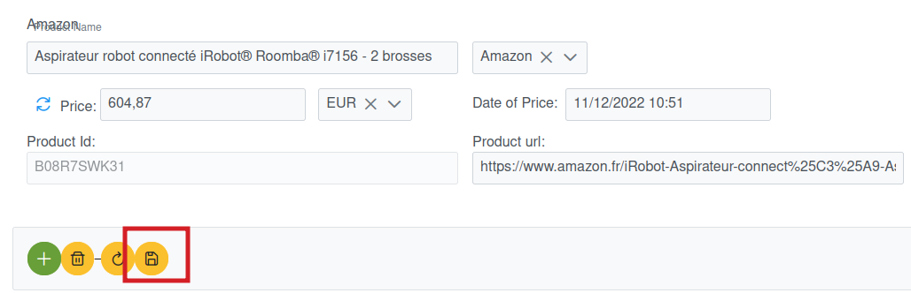
- Vous voyez maintenant votre produit avec son prix dans chaque magasin.
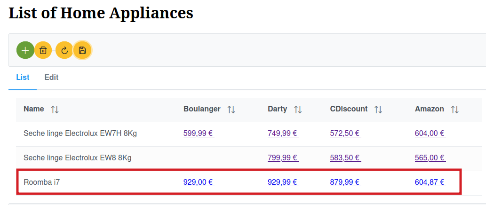
- Vouz n'aurez qu'à appuyer sur 'Refresh' pour mettre à jour son prix dans tous les magasins !
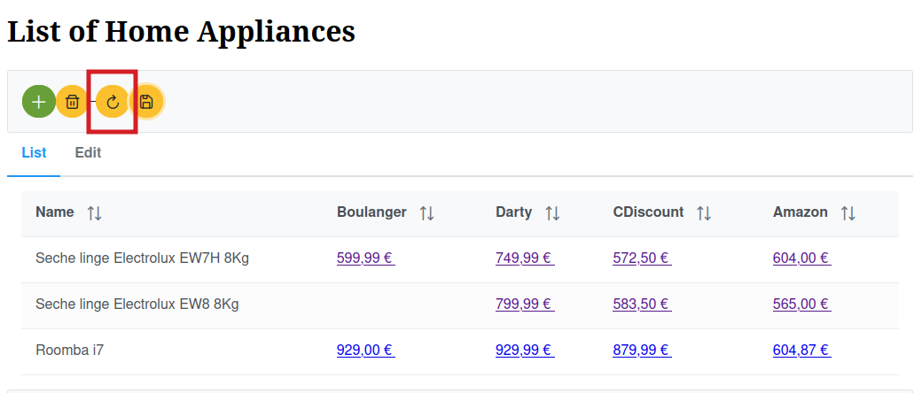
Que faire en cas d'erreur ?
- Parfois, vous verrez un message en rouge "Unknown Error" quand vous faites une recherche de produit. Dans ce cas, changez les critères de recherche avec des termes plus génériques et réessayez.
Si ce message apparait systématiquement, prévenez nous !
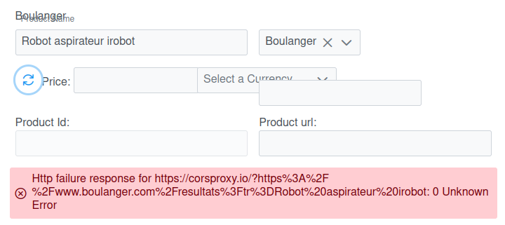